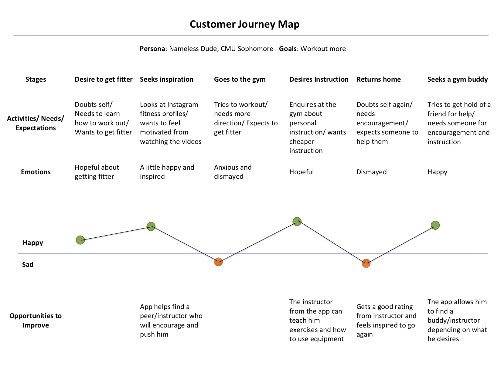
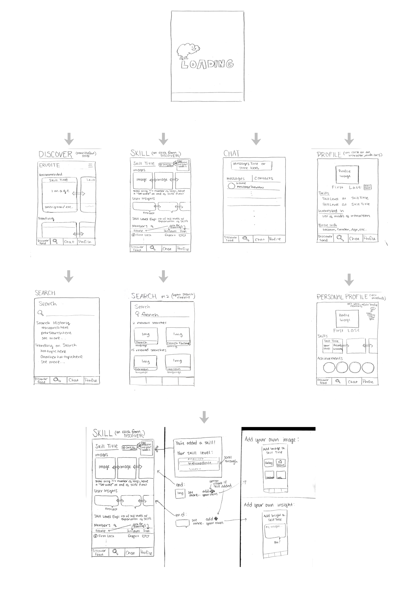
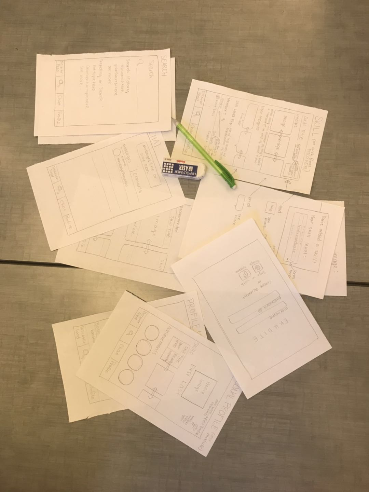
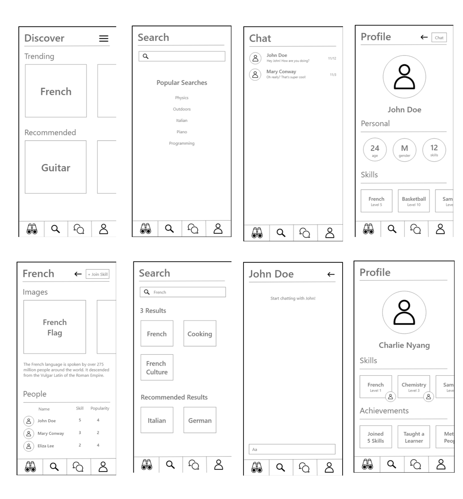
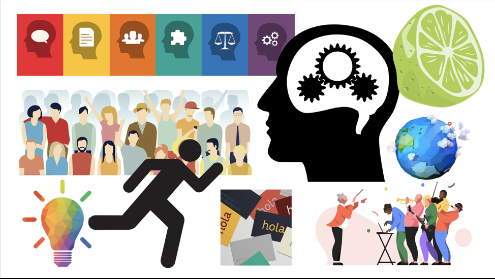
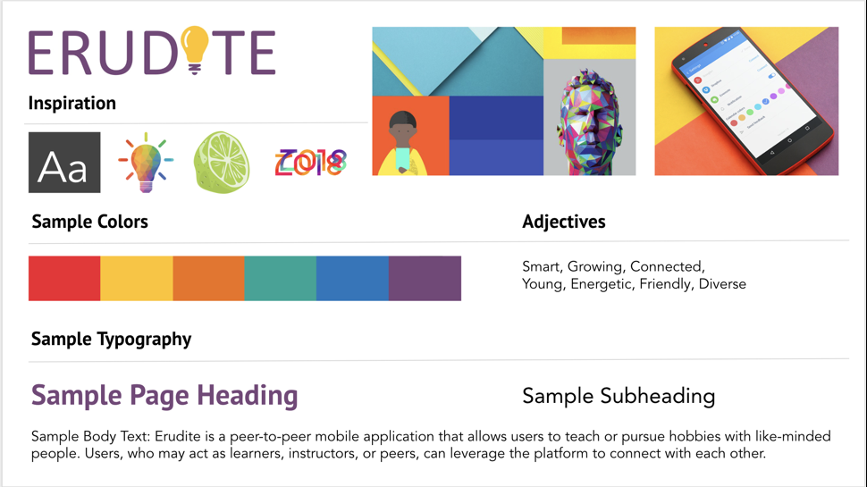
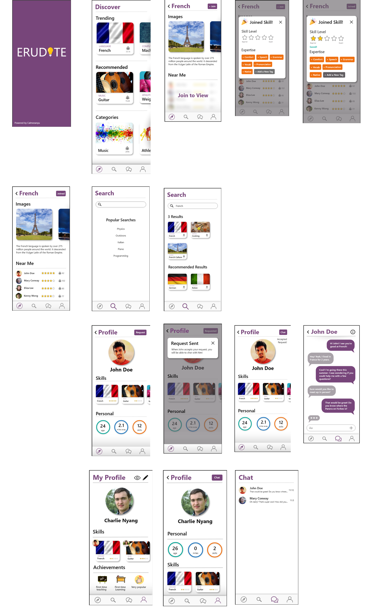
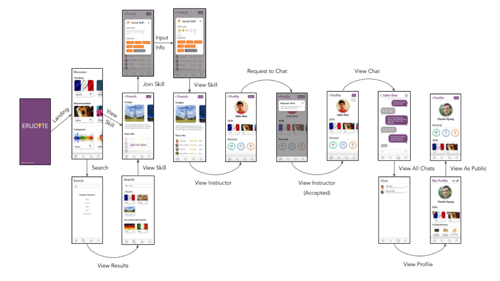
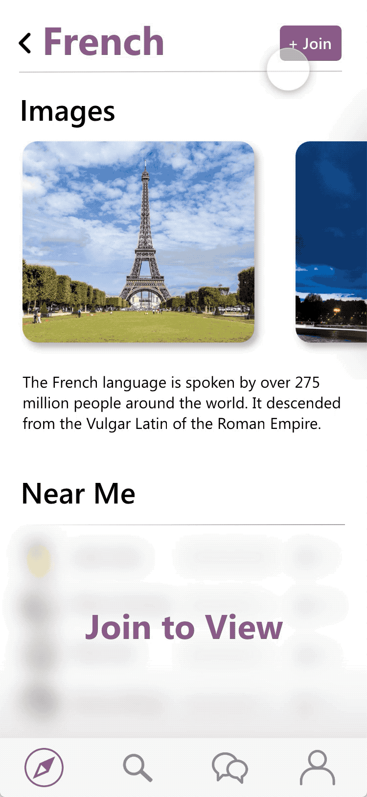

02.
Research
Competitive Analysis
To better ideate the new application, we conducted a competitive analysis of some of the major players in this domain
-

Quora
A Q&A platform for any topics with user comments and upvotes. Users have profiles that detail their expertise in topic areas. The AMA sessions are ablt to ping questions to real experts.
Pros
Easy to search for questions asked in the past
Answers tend to be very detailed (motivated by upvotes)
Covers almost any topic
Cons
Answers tend to be top rated because they embed images and use good formatting, not necessary the best content-wise
Interactivity is limited, only back and forth in the comments section
No space for learning about procedures
Opportunity for differentiation
Quora has great personal touch, and wikiHow has the procedure-based learning, but neither have both. A good Q&A platform for learning skills will need to fuse the two features.
-

Duolingo
A language learning mobile application with placement tests and learning modules. It provides multiple languages and includes an encouragement system by record streaks
Pros
Very intuitive
Covers multiple languages and users are allowed to learn more than one at once
The streak motivates users to keep working
Users are not allowed to move on until pass tests
Cons
Only covers language learning
Language is something that you learn with practice but there's only so much practice on the app
Most language doesn't work for people who don't know English
Opportunity for differentiation
Duolingo has intuitive interactions that we could try to emulate. But its lack of fields it covers allows us to jump in and fill that gap with a Q&A app.
-

Udemy
An online learning platform where users can learn all sorts of things. Users can also become instructors and post their own courses.
Pros
Cheaper than platforms like Udacity or Coursera
Covers a lot of subjects
Cons
No quality guarantees. Courses are usually taught to a lot of students and not everyone is able to talk to the instructor or the teaching assistants.
Opportunity for differentiation
We can focus on connections between users or connections between users and instructors.
User interviews
We also conducted user interviews about their preference of the products in this domain
Questions
What learning/education apps or websites do you use or have heard good things about?
What are any subjects/hobbies that you know a lot about and would like to share your knowledge/tips/skill of? Conversely, what are any subjects/hobbies that you would like to learn more about?
What kinds of features would you like to see on a community powered app that would allow you to connect with others to either learn from them or to share your skills with them?
-
"I use a Chinese translation app called Pleco to help me with my Chinese class. I think it is very helpful and I would highly recommend it to any beginners learning Chinese."
"I know a lot about certain video games. I also know a lot about other hands-on games such as pool and foosball. I would like to learn more about more active sports such as volleyball and soccer."
"I believe the best thing would be a char system that allows me to connect with others to talk about my passions and skills. I would also like a hang-out option that allows me to make plans with a group of other people that are interested in the same hobbies."
-
"I have used coursera and duolingo. Heard good things about duolingo"
"I knew random stuff about Asian foods. And I would like to learn about board games"
"Being about to actually talk to or be friend with the people who teaches me skills really matters to me."
-
"I use Leetcode. It seems like everybody around me is using it to practice coding skills."
"I actually don't know what I can share. But I would really like to learn Spanish."
"I think being able to ask questions is really critical to my learning. If I have questions about the learning content but there is no one to answer my question, I don't consider it effective learning."
03.
Ideation
Features
Based on the results of the research, we ideated a list of possible features that are needed by the users to improve learning and communication.
-
Discover hobbies
Categories
Number of people doing the hobby
Search hobbies
Filter users (by location, by similar interests, by skill level, by star rating)
-
Profile
User input/edit skill proficiencies & contact information
View profiles of others
Start rating & hot word display
Personal growth dashboard
-
User interaction
Online chat
-
Review
Star ratings ('instructor', 'learner', 'peer')
Feedback from users who have interacted with
Hot words selection
Customer Journey Map
We created a customer journey map, mapping the experience of typical user using our app.

User personas
We created three typical users of our app, in the roles of "Peer seeker", "Instructor", and "Learner".
-
John Stamper
First-year grad student, MIIS program
Enjoy playing guitar"To like and dislike the same thing, this is what makes a solid friend"
John is a first-year graduate student at CMU majoring information system management. He’s an international student and it’s his first year in the USA. He has just stayed in Pittsburgh for 2 months and has not made many friends yet. Despite a super busy study life, John really enjoys playing guitar. Every day he tried to find some time to practice. Practice makes perfect. Gradually he feels that practicing alone is quite boring and wishes to find a peer. He hopes his potential peer would live close to him so that they could meet and practice together. He also hopes his potential peer to have a similar level of playing skills so they would be able to learn from each other. John not only wants a peer to practice guitar with and share the same interest with but also wants to make friends. He hopes that by liking the same thing, a solid friendship would be developed within.
-
Jack Ye
Senior student at UCSD, Business Administration major
Bodybuilding Enthusiast"Sports make me strong and enjoy life."
Jack Ye is a senior studying Business Administration at the University of California, San Diego. In his free time, Jack enjoys weightlifting and spending a large amount of time in the gym. Unfortunately, none of his close friends work out. As a result, Jack is often in the gym alone. After years of weightlifting, Jack feels that he is capable of coaching a newcomer. However, he would only do something like this on occasion, because he already has a part-time job on campus. Also, Jack would be very excited if he was accompanied by a workout buddy during his time at the gym.
-
Jill Jones
26-year-old foodie worked in the marketing field
Enjoy traveling and experiencing culturesr"I wish I could go over the world, see the people and cultures with my own eyes, and eat all the foods"
Jill has a “9 to 5” job, but still tries to find time to invest into her hobbies and friends. Jill is a foodie outside of work. She spends her spare time updating her food instagram and updating her bucket list of foods and restaurants she wants to try. Because her love of food traverses cultures, Jill has also discovered an interest in traveling. And because her love of food is so great, Jill has also realized that her sedentary lifestyle has been causing a few embarrassing moments of difficulty on the stairs up to her office. Jill is currently looking for a way she can continue to foster her love for discovering new foods and cultures along with exercising healthier lifestyle practices.
Scenarios
We created several typical scenarios where users can use our app.
-
Discover Hobby
Jill has just finished her spring semester, and is looking to pick up a new hobby for the summer. She isn’t sure what to go with, so she browses Erudite’s home page and looks through the list of featured hobbies. She finds yoga interesting, so she decides to pursue it and moves to find an instructor on the app.
-
Share Knowledge
John is good at yoga and wants to share his interest with more people by offering online help and instructions. John registers an account on Erudite and fills in his skill level and contact information. Soon Jill contact him and asks him questions about yoga practicing. John is so happy that he’s sharing his interest and helping others.
-
Anonymous Review
Jill meets up with John, who teaches her the basics moves of yoga. However, she felt that Jack was more concerned with getting his own workout in than helping to teach Jill. So Jill decides to go back on the app and selects her last meetup. She clicks on some select review words as generated by the app like “good at his craft” and “knowledgeable” and not words like “great teacher”. She also leaves a 3.5 star rating.
-
Find Peer
Jack knows elementary french and is getting better at writing and reading but doesn’t get much practice with with speaking. Jack makes an account on Erudite and looks up French speakers of the same skill level as him. Soon enough people who are also elementary french speakers reach out to him and he is able to practice French with them.
04.
Design
Pencile Wireframes

User Testing
The users we tested with grasped the idea of our application relatively easily. No clarifying questions were asked about the purpose and intended audience of Erudite.
-

First task: Add "French" as a skill to their profile
Finding: Adding color to make the button pop out and easily find
Second task: Look at their progress on skills
Finding: Clear design guided users to move quickly
Third task: Message their French instructor
Finding: Adding the corresponding skill of the person in the chat list
Overall, we were pleased with our users’ ability to pick up the app and perform some basic and multi-step operations with relative ease. Incorporating their feedback into a higher fidelity wireframe with color should improve the usability of our prototype.
Black and White Wireframes

Mood Board

Style Guide

Color Wireframes

Application Workflow

05.
Conclusion
Erudite, a P2P mobile application that allows users to teach or pursue skills with like-minded people. Users, who may act as learners, instructors, or peers, can leverage the platform to connect with each other. Whether a world traveler or a college student, Erudite is the perfect platform for engaging in a skill and meeting interesting people.
